주택관리사보-1차 (2016-07-16 기출문제)
1과목: 민법
1. 민법상 법원(法源)에 관한 설명으로 옳지 않은 것은? (다툼이 있으면 판례에 따름)
- 민법의 법원인 법률에는 대법원규칙도 포함된다.
- 관습법은 당사자가 그 존재를 주장ㆍ증명하여야만 법원이 이를 적용할 수 있다.
- 물권은 관습법에 의하여 창설될 수 있다.
- 사실인 관습은 법령으로서의 효력이 없다.
- 국제물품매매계약에 관한 국제연합협약(CISG)은 민법의 법원이다.
(정답률: 44%)

2. 다음 중 재판상 행사하여야만 효과가 발생하는 것은?
- 해제권
- 채권자취소권
- 환매권
- 예약완결권
- 상계권
(정답률: 40%)
3. 신의칙에 관한 설명으로 옳은 것은? (다툼이 있으면 판례에 따름)
- 신의칙상 보호의무는 불법행위에서만 문제될 뿐, 계약관계에서는 문제되지 않는다.
- 소멸시효는 시간의 경과라는 객관적 사실만을 요건으로 하므로, 그 완성의 효과를 주장하는 것은 신의칙에 반할 여지가 없다.
- 사정변경의 원칙에서 말하는 '사정'에는 계약의 기초가 되었던 객관적 사정 외에 계약 당사자의 주관적 사정도 포함된다.
- 상계권 행사가 권리남용이 되기 위해서는 상계권자에게 아무런 이익이 없음에도 오직 상대방에게 고통을 주고 손해를 입히려는 주관적 요건이 첪족되어야 한다.
- 토지이용권이 없는 건물에 대한 토지소유자의 철거청구가 권리남용에 해당하여 허용되지 않더라도, 임료 상당의 부당이득반환청구권까지 배제되는 것은 아니다.
(정답률: 49%)
4. 권리능력에 관한 설명으로 옳지 않은 것은? (다툼이 있으면 판례에 따름)
- 출생신고는 권리능력 취득의 요건이 아니다.
- 태아가 의사의 과실로 인하여 모체(母體) 내에서 사망하였다면, 태아는 그 의사에 대한 손해배상청구권을 취득하지 못한다.
- 태아인 동안에는 법정대리인이 있을 수 없으므로, 법정대리인에 의한 수증(受贈)행위를 할 수 없다.
- 인정사망이란 사망의 확증은 없으나 재난으로 인하여 사망이 확실시되는 경우에 관공서의 보고에 의하여 가족관계등록부에 기재하여 사망한 것으로 의제하는 제도이다.
- 실종선고를 받아도 실종자의 권리능력은 소멸하지 않는다.
(정답률: 45%)
5. 제한능력자에 관한 설명으로 옳지 않은 것은? (다툼이 있으면 판례에 따름)
- 한정후견개시심판의 청구권자에 지방자치단체의 장도 포함된다.
- 특정후견이 개시된 경우, 특정후견인은 피특정후견인이 단독으로 체결한 계약을 취소할 수 없다.
- 피성년후견인이 일상생활에 필요하고 그 대가가 과도하지 않은 일용품을 구입한 경우, 성년후견인은 그 법률행위를 취소할 수 없다.
- 미성년자가 친권자로부터 허락받아 행하는 특정 영업과 관련하여서는 그 친권자에게 법정대리권이 인정되지 않는다.
- 경제적으로 미성년자에게 유리한 매매계약은 미성년자가 단독으로 체결했더라도 법정 대리인이 취소할 수 없다.
(정답률: 54%)
6. 법원이 선임한 부재자의 재산관리인이 법원의 허가 없이도 유효하게 할 수 있는 행위가 아닌 것은?
- 부재자의 채무를 담보하기 위하여 부재자 소유의 부동산에 저당권을 설정해주는 행위
- 비가 새는 부재자 소유 건물의 지붕 수선을 도급주는 행위
- 부재자 소유의 미등기 건물에 대하여 보존등기를 신청하는 행위
- 부재자가 가진 채권의 소멸시효를 중단시키는 행위
- 부재자가 한 무이자 금전대여를 이자부로 바꾸는 행위
(정답률: 48%)
7. 민법상 재단법인에 관한 설명으로 옳지 않은 것은? (다툼이 있으면 판례에 따름)
- 재단법인은 영리법인이 아니다.
- 재단법인 설립을 위한 설립자의 재산출연행위는 상대방 없는 단독행위이다.
- 재단법인의 설립자가 재단법인의 목적을 정하지 아니하고 사망한 경우, 이해관계인 또는 검사의 청구에 의하여 법원이 이를 정한다.
- 유언으로 특정 부동산을 출연하여 재단법인을 설립하는 경우 제3자에 대한 관계에서 그 부동산이 재단법인에 귀속되기 위해서는 소유권이전등기가 필요하다.
- 비영리 재단법인도 그 목적을 달성하기 위하여 본질에 반하지 않는 정도의 영리활동은 할 수 있다.
(정답률: 40%)
8. 민법상 법인의 이사에 관한 설명으로 옳은 것은? (다툼이 있으면 판례에 따름)
- 이사가 여럿 있는 경우 정관에 다른 규정이 없으면 이사의 과반수로써 대표행위를 한다.
- 대표권제한을 등기하지 않았더라도 그 사실을 상대방이 알았다면 법인은 대표권제한으로써 그 상대방에게 대항할 수 있다.
- 이사는 그 대표권의 행사를 포괄적으로 타인에게 위임할 수 있다.
- 법인과 이사의 이익이 상반하는 사항이 있는 경우에 법원은 이해관계인이나 검사의 청구에 의하여 임시이사를 선임하여야 한다.
- 파산 이외의 사유로 법인이 해산한 경우 정관 또는 총회의 결의로 달리 정한 바가 없다면 이사가 청산인이 된다.
(정답률: 33%)
9. 민법상 법인의 불법행위능력에 관한 설명으로 옳지 않은 것은? (다툼이 있으면 판례에 따름)
- 법인의 불법행위책임이 성립하여 법인이 피해자에게 손해를 배상한 경우, 법인은 불법행위를 한 대표기관 개인에게 구상권을 행사할 수 있다.
- 법인의 대표자가 직무에 관하여 불법행위를 한 경우, 사용자책임에 관한 민법규정이 적용되지 않는다.
- 대표기관의 불법행위가 외형상으로만 직무관련성을 보이는 경우, 실제 직무관련성에 대한 피해자의 악의ㆍ과실 유무와 상관없이 법인은 불법행위책임을 진다.
- 법인의 불법행위책임과 대표기관 개인의 책임은 과실상계와 관련하여 그 범위가 달라질 수 있다.
- 법인의 사원이 법인 대표자의 직무집행과 관련하여 대표자와 공동으로 불법행위를 한 경우, 피해자에 대한 법인, 법인 대표자 및 그 사원의 손해배상책임은 모두 부진정연대관계에 있다.
(정답률: 39%)
10. 법인의 해산 및 청산에 관한 민법규정의 설명으로 옳지 않은 것은? (다툼이 있으면 판례에 따름)
- 파산은 사단법인과 재단법인에 공통하는 해산사유이다.
- 해산한 법인은 청산의 목적범위 내에서만 권리능력이 인정된다.
- 청산 중의 법인은 변제기에 이르지 아니한 채권도 변제할 수 있다.
- 청산종결 등기가 경료되었다면, 청산사무가 완전히 종결하지 않았다고 하더라도 법인은 소멸한다.
- 법인의 청산에 관한 민법 규정은 강행규정이다.
(정답률: 35%)
11. 착오로 인한 의사표시에 관한 설명으로 옳은 것은? (다툼이 있으면 판례에 따름)
- 법률행위의 일부에 착오가 있는 경우, 원칙적으로 그 일부만을 취소할 수 있다.
- 법률행위의 내용에 관한 표의자의 착오와 과실은 표의자의 상대방이 입증해야 한다.
- 부동산 매매계약에서 시가에 관한 착오는 원칙적으로 법률행위의 중요부분에 관한 착오라 할 수 없다.
- 표의자가 동기의 착오를 이유로 의사표시를 취소하려면 동기가 상대방에게 표시되어야 하고 표의자에게 과실이 없어야 한다.
- 상대방이 표의자의 착오를 알고 이를 이용한 경우라도 착오가 표의자의 중대한 과실로 인한 것이라면, 표의자는 그 의사표시를 취소할 수 없다.
(정답률: 47%)
12. 주물과 종물에 관한 설명으로 옳은 것은? (다툼이 있으면 판례에 따름)
- 주물을 처분할 때에 특약으로 종물을 제외할 수는 없다.
- 물건이 주물의 소유자나 이용자의 상용(常用)에 공여되고 있더라도 주물 그 자체의 효용과 직접 관계가 없다면 그 물건은 종물이 아니다.
- 물건의 소유자가 그 물건의 상용에 공(供)하기 위하여 자기소유인 다른 물건을 이에 부합하게 한 때에는 그 부합물은 종물이다.
- 주물과 종물에 관한 민법규정은 권리 상호간의 관계에 유추적용되지 않는다.
- 본채의 소유자가 본채 바로 옆에 축조하여 낡은 가재도구를 보관하는 장소로 쓰는 창고는 본채의 종물이 될 수 없다.
(정답률: 44%)
13. 과실(果實)에 관한 설명으로 옳은 것을 모두 고른 것은? (다툼이 있으면 판례에 따름)
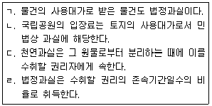
- ㄱ, ㄴ
- ㄱ, ㄹ
- ㄴ, ㄷ
- ㄱ, ㄷ, ㄹ
- ㄴ, ㄷ, ㄹ
(정답률: 41%)
14. 단독행위로 할 수 없는 것은?
- 채무인수
- 무권대리행위의 추인
- 상계
- 채무면제
- 계약해제
(정답률: 44%)
15. 불공정한 법률행위에 관한 설명으로 옳지 않은 것은? (다툼이 있으면 판례에 따름)
- 불공정한 법률행위에 대한 증명책임은 이를 주장하는 자가 부담한다.
- 급부 사이의 불균형 여부는 급부의 거래상 객관적 가치에 의하여 판단한다.
- 어업권 소멸로 인한 손실보상금의 분배에 관한 어촌계 총회의 결의도 현저하게 불공정할 경우 무효가 될 수 있다.
- 아무런 대가관계 없이 당사자 일방이 상대방에게 일방적인 급부를 하는 법률행위는 불공정행위가 될 수 없다.
- 어떠한 법률행위가 불공정한 법률행위에 해당하는지는 사실심변론종결시를 기준으로 판단하여야 한다.
(정답률: 38%)
16. 법률행위의 효력이 발생하는 경우는? (다툼이 있으면 판례에 따름)
- 2016년 7월 16일에 체결된, 형사사건변호에 관한 성공보수약정
- 소송에서 증언할 것을 조건으로 통상 용인되는 수준의 실비를 보전받기로 한 약정
- 장래의 부첩(夫妾)관계를 승인하는 합의
- 변호사 아닌 자가 민사소송에서 승소를 시켜주는 대가로 소송물 일부를 양도받기로 하는 약정
- 지방자치단체가 골프장사업계획승인과 관련하여 사업자로부터 기부금을 받기로 한 계약
(정답률: 40%)
17. 의사표시에 관한 설명으로 옳은 것은? (다툼이 있으면 판례에 따름)
- 침묵에 의하여는 사기가 성립할 수 없다.
- 통정허위표시는 의사표시의 당사자 간에는 유효하다.
- 가장행위에 기한 채권을 가압류한 채권자는 통정허위표시의 무효로써 대항하지 못하는 '선의의 제3자'에서의 제3자에 포함되지 않는다.
- 통정허위표시의 무효로써 대항하지 못하는 선의의 제3자에게는 무과실이 요구된다.
- 임대차보증금반환채권이 가장양도된 후 양수인의 채권자가 그 채권에 대해 압류 및 추심명령을 받은 경우, 양수인의 채권자는 통정허위표시의 무효로써 대항하지 못하는 '선의의 제3자'에서의 제3자에 해당한다.
(정답률: 41%)
18. 의사표시의 효력발생에 관한 설명으로 옳지 않은 것은? (다툼이 있으면 판례에 따름)
- 의사표시가 보통일반우편의 방법으로 발송되었다는 사실이 인정될 경우, 상당기간 내에 도달한 것으로 추정된다.
- 과실 없이 상대방의 소재를 알지 못한다면 공시송달에 의해 의사표시를 송달할 수 있다.
- 격지자간의 계약은 승낙의 통지를 발송한 때에 성립한다.
- 의사표시의 도달은 상대방이 통지를 현실적으로 수령하거나 통지의 내용을 알 것까지 요구하지 않는다.
- 의사표시의 상대방이 의사표시를 받은 때에 제한능력자였으나 그의 법정대리인이 의사표시의 도달을 안 경우, 표의자는 그 의사표시로써 대항할 수 있다.
(정답률: 50%)
19. 대리에 관한 설명으로 옳지 않은 것은? (다툼이 있으면 판례에 따름)
- 법정대리에도 대리권남용의 법리가 적용될 수 있다.
- 대리인에 대한 성년후견 개시가 있으면 대리권은 소멸한다.
- 대리인은 대여금의 수령권한만을 위임받은 경우에도 본인의 특별수권 없이 그 대여금 무의 일부를 면제할 수 있다.
- 의사표시의 효력이 의사의 흠결, 사기, 강박으로 인하여 영향을 받을 경우에 그 사실의 유무는 대리인을 표준하여 결정한다.
- 물건을 매도하는 계약의 체결과 이행에 관하여 포괄적으로 대리권을 수여받은 대리인은 특별한 사정이 없는 한 상대방에 대하여 약정된 매매대금지급기일을 연기할 권한도 가진다.
(정답률: 40%)
20. 乙이 대리권 없이 甲을 대리하여 甲의 토지와 그 지상건물을 선의ㆍ무과실의 丙에게 매도하였다. 표현대리가 성립하지 않을 때, 다음 설명 중 옳지 않은 것은? 다툼이 있으면 판례에 따름)
- 매매계약은 甲이 추인하지 아니하면 甲에 대하여 효력이 없다.
- 乙의 대리행위 일부에 대한 甲의 추인은 丙의 동의가 없는 한 무효이다.
- 甲의 추인은 다른 의사표시가 없으면, 매매계약시에 소급하여 그 효력이 생긴다.
- 乙이 그 대리권을 증명하지 못하고 또 甲의 추인을 받지 못한 경우, 乙은 자신의 선택으로 계약이행책임 또는 손해배상책임을 진다.
- 乙이 甲의 토지와 그 지상건물을 단독상속한 후 소유자의 지위에서 자신의 대리행위가 무권대리로서 무효임을 주장하는 것은 신의칙에 반한다.
(정답률: 40%)
21. 법률행위의 무효와 취소에 관한 설명으로 옳은 것은?
- 취소할 수 있는 법률행위를 후견인이 추인하는 경우, 추인은 취소의 원인이 소멸한후에 하여야만 효력이 있다.
- 당사자가 무효임을 알고 추인한 때에는 법률행위시에 소급하여 효력이 발생하는 것이 원칙이다.
- 법률행위의 일부분이 무효인 때에는 원칙적으로 그 나머지 부분은 무효가 되지 않는다.
- 악의의 제한능력자는 제한능력을 이유로 취소한 행위에 의하여 받은 이익이 현존하지 않더라도 그 이익을 전부 상환하여야 한다.
- 제한능력자와 계약을 맺은 상대방은 계약 당시에 제한능력자임을 모른 경우에는 추인이 있을 때까지 자신의 의사표시를 철회할 수 있다.
(정답률: 40%)
22. 법률행위의 조건에 관한 설명으로 옳지 않은 것은? (다툼이 있으면 판례에 따름)
- 조건의 성취가 미정한 권리도 일반규정에 의하여 담보로 제공할 수 있다.
- 조건이 사회질서에 반하는 경우, 그 법률행위는 무효가 된다.
- 해제조건이 법률행위 당시 이미 성취한 경우, 그 법률행위는 무효이다.
- 법률행위의 당사자는 특별한 사정이 없는 한 합의로 해제조건 성취의 효력을 그 성취전으로 소급하게 할 수 있다.
- 동산소유권유보부매매에서는 해제조건부로 소유권이 이전된다.
(정답률: 27%)
23. 소멸시효에 관한 설명으로 옳은 것은? (다툼이 있으면 판례에 따름)
- 소멸시효는 법률행위에 의하여 이를 단축ㆍ경감할 수 없으나 이를 배제ㆍ연장ㆍ가중할 수 있다.
- 부동산이 가압류된 뒤 강제경매절차에서 매각되어 가압류등기가 말소된 경우, 특별한 사정이 없는 한 그 말소시점에 가압류에 의한 시효중단의 효력은 종료한다.
- 주채무의 소멸시효기간이 확정판결로 10년으로 연장된 경우, 단기인 보증채무의 소멸 시효기간도 10년으로 연장된다.
- 채무자가 액수에 다툼이 없는 채무의 소멸시효가 완성된 후 그 일부를 변제한 경우, 나머지 채무에 대해서는 시효완성의 이익을 포기한 것으로 추정되지 않는다.
- 시효가 정지한 때에는 정지시까지 경과한 시효기간은 이를 산입하지 아니하고 정지사유가 종료한 때로부터 새로이 진행한다.
(정답률: 21%)
24. 甲은 그 소유 부동산을 1980.7.16. 乙에게 매도하였다. 2016.7.16. 현재 乙의 甲에 대한 부동산소유권이전등기청구권의 소멸시효가 완성된 경우를 모두 고른 것은? (다툼이 있으면 판례에 따름)
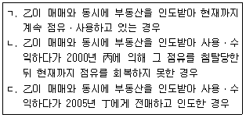
- ㄴ
- ㄷ
- ㄱ, ㄴ
- ㄱ, ㄷ
- ㄴ, ㄷ
(정답률: 37%)
25. 물권에 관한 설명으로 옳지 않은 것은? (다툼이 있으면 판례에 따름)
- 권리도 물권의 객체가 될 수 있다.
- 甲의 부동산에 乙의 저당권이 설정된 경우, 특별한 사정이 없는 한 乙이 그 부동산 소유권을 취득하면 그 저당권은 소멸한다.
- 토지의 미등기매수인은 직접 토지의 불법점유자를 상대로 소유물반환청구를 할 수 없다.
- 甲 소유 토지 전부에 乙이 지상권을 가지는 경우, 甲은 乙의 동의 없이도 丙에게 그 지하 공간의 일부에 대해 지상권을 설정할 수 있다.
- 물건의 소유자 甲이 乙에게 그 처분권한을 부여한 경우, 乙이 이를 행사하지 않고 있는 동안에 甲은 그 물건을 유효하게 처분할 수 있다.
(정답률: 46%)
26. 물권변동에 관한 설명으로 옳은 것은? (다툼이 있으면 판례에 따름)
- 토지수용 재결에서 정한 수용의 개시일까지 보상금이 지급 또는 공탁된 경우, 그 수용의 개시일에 물권변동이 일어난다.
- 건물을 신축한 자는 그 보존등기를 한 때에 건물의 소유권을 취득한다.
- 법원에 의한 부동산 경매에 있어서는 매각허가결정시에 물권변동이 일어난다.
- 甲이 신축한 건물을 乙이 양수하여 乙 앞으로 보존등기를 한 경우 乙은 건물의 소유권을 취득하지 못한다.
- 부동산 매매를 원인으로 하는 소유권이전등기소송에서 매수인의 승소판결이 확정된 때에 매수인은 소유권을 취득한다.
(정답률: 27%)
27. 점유에 관한 설명으로 옳지 않은 것은? (다툼이 있으면 판례에 따름)
- 점유물반환청구권의 행사기간은 출소(出訴)기간이다.
- 간접점유자도 점유물방해예방청구권을 행사할 수 있다.
- 점유보조자에게는 점유보호청구권이 인정되지 않는다.
- 점유자는 과실(過失) 없이 점유한 것으로 추정되지 않는다.
- 점유자가 점유물에 대하여 행사하는 권리는 적법하게 보유한 것으로 본다.
(정답률: 23%)
28. 공동소유에 관한 설명으로 옳지 않은 것은? (다툼이 있으면 판례에 따름)
- 합유지분의 처분에는 합유자 전원의 동의를 요한다.
- 법인 아닌 사단의 구성원 개인이 단독으로 총유재산의 보존을 위한 소송을 제기할 수 없다.
- 공유자가 자기 지분을 포기한 때에는 그 지분은 다른 공유자에게 각 지분의 비율로 귀속한다.
- 甲과 乙이 각 2/3, 1/3의 지분으로 공유하는 토지를 甲이 배타적으로 사용ㆍ수익하는 경우, 乙은 甲에게 공유물의 반환을 청구할 수 없다.
- 총유물의 처분에 관해 정관 규정이 없는 법인 아닌 사단의 대표가 사원총회의 결의없이 한 처분은 선의의 전득자에 대해서는 효력이 있다.
(정답률: 35%)
29. 지상권에 관한 설명으로 옳지 않은 것은? (다툼이 있으면 판례에 따름)
- 약정 지상권의 존속기간 중에는 지상물이 멸실되어도 지상권은 소멸하지 않는다.
- 약정 지상권의 지료에 관한 합의가 없는 경우 지료는 당사자의 청구에 의하여 법원이 이를 정한다.
- 지상권설정자는 특별한 사정이 없는 한 토지의 불법점유자에 대해 임료 상당의 손해배상을 청구할 수 없다.
- 지료연체를 이유로 한 지상권 소멸청구에 의해 지상권이 소멸한 경우, 지상권자는 지상물에 대한 매수청구권을 행사할 수 없다.
- 법정지상권이 붙은 건물이 양도된 경우 특별한 사정이 없는 한 토지소유자는 건물의 양수인을 상대로 건물의 철거를 청구할 수 없다.
(정답률: 27%)
30. 전세권에 관한 설명으로 옳지 않은 것은? (다툼이 있으면 판례에 따름)
- 목적물의 인도는 전세권의 성립요건이 아니다.
- 전세권자는 목적물의 현상을 유지하고 그 통상의 관리에 속한 수선을 하여야 한다.
- 전세권의 존속기간 중 전세목적물의 소유권이 이전된 경우, 구(舊) 소유자의 전세권자에 대한 전세금반환의무는 소멸하지 않는다.
- 건물전세권이 법정갱신된 경우 전세권자는 갱신의 등기 없이도 전세목적물을 취득한 제3자에 대하여 자신의 권리를 주장할 수 있다.
- 전세권소멸 후 전세권자가 그 목적물을 반환하였더라도 전세권설정등기의 말소에 필요한 서류를 교부하거나 그 이행의 제공을 하지 아니하는 이상, 전세권설정자는 전세금의 반환을 거절할 수 있다.
(정답률: 30%)
31. 민법상 유치권에 관한 설명으로 옳은 것은? (다툼이 있으면 판례에 따름)
- 부동산에 가압류등기가 마쳐진 후에 채무자의 점유이전으로 제3자가 유치권을 취득한 경우, 유치권자는 그 부동산경매절차의 매수인에게 유치권을 주장할 수 없다.
- 부동산에 경매개시결정등기가 마쳐진 후에 채무자의 점유이전으로 제3자가 유치권을 취득한 경우, 유치권자는 그 부동산경매절차의 매수인에게 유치권을 주장할 수 없다.
- 부동산에 저당권이 설정된 후에 유치권이 성립하면 유치권자는 그 부동산경매절차의 매수인에게 유치권을 주장할 수 없다.
- 유치권자가 피담보채권의 일부를 변제받은 경우, 남은 채권액에 상응하는 유치물 부분에 한하여 그 권리를 행사할 수 있다.
- 유치권자가 유치물로부터 금전이 아닌 과실(果實)을 수취한 경우, 특별한 절차를 거치지 않고도 그 과실을 다른 채권보다 먼저 그 채권의 변제에 첪당할 수 있다.
(정답률: 21%)
32. 저당권의 효력에 관한 설명으로 옳지 않은 것은? (다툼이 있으면 판례에 따름)
- 건물 저당권자는 독립된 건물로 인정되지 않는 증축부분에 대해서도 저당권을 행사할 수 있다.
- 저당권 설정 뒤에 부속된 종물에 대해서도 특별한 사정이 없는 한 저당권의 효력이 미친다.
- 건물 저당권자는 건물의 매매대금에 대해 물상대위를 할 수 있다.
- 저당권이 설정된 건물의 화재로 건물 소유자가 받을 보험금청구권은 물상대위의 객체가 될 수 있다.
- 채무자 소유의 여러 부동산에 공동저당권을 설정한 경우 그 경매대가를 동시에 배당하는 때에는 각 부동산의 경매대가에 비례하여 그 채권의 분담을 정한다.
(정답률: 26%)
33. 보증채무에 관한 설명으로 옳지 않은 것은?
- 전자적 형태로 표시한 보증의사는 유효하다.
- 불확정한 다수의 채무에 대하여 보증하는 경우 보증하는 채무의 최고액을 서면으로 특정하여야 한다.
- 보증인의 부담이 주채무의 목적이나 형태보다 중한 때에는 주채무의 한도로 감축한다.
- 채무자가 보증인을 세울 의무가 있는 경우, 채권자가 보증인을 지명하지 않은 한 그 보증인은 행위능력 및 변제자력이 있는 자로 하여야 한다.
- 채권자는 보증계약을 체결할 때 보증계약의 체결 여부에 영향을 미칠 수 있는 주채무자의 채무 관련 신용정보를 알고 있는 경우에는 보증인에게 그 정보를 알려야 한다.
(정답률: 40%)
34. 지명채권양도에 관한 설명으로 옳은 것을 모두 고른 것은? (다툼이 있으면 판례에 따름)
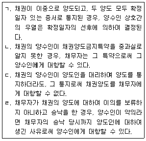
- ㄱ, ㄴ
- ㄱ, ㄷ
- ㄴ, ㄷ
- ㄴ, ㄹ
- ㄷ, ㄹ
(정답률: 35%)
35. 민법이 규정하고 있는 전형계약이 아닌 것은?
- 사무관리
- 여행계약
- 현상광고
- 조합
- 종신정기금
(정답률: 47%)
36. 매매에 관한 설명으로 옳지 않은 것은? (다툼이 있으면 판례에 따름)
- 매매의 목적이 된 권리가 매도인에게 속하지 않은 경우라도 원칙적으로 매매계약은 유효하다.
- 매매의 목적물에 전세권이 설정되어 있었으나 이를 알지 못한 매수인은 계약의 목적을 달성할 수 없는 경우에 한하여 계약을 해제할 수 있다.
- 저당부동산의 매수인이 그 피담보채무 전부를 인수하는 것으로 매매대금 일부의 지급에 갈음하기로 약정하고 소유권을 취득하였으나 그 저당권의 실행으로 그 소유권을 상실한 경우, 매수인은 계약을 해제할 수 없다.
- 법원 경매의 경우에는 권리의 하자로 인한 담보책임이 적용되지 않는다.
- 변제기에 도달하지 아니한 채권의 매도인이 채무자의 자력을 담보한 때에는 변제기의 자력을 담보한 것으로 추정한다.
(정답률: 18%)
37. 甲이 그 소유 토지를 乙에게 매도하여 인도하고, 乙이 다시 그 토지를 丙에게 매도하여 인도하였다. 乙과 丙 모두 매매대금을 전부 지급하였으나, 각 소유권이전 등기를 마치지 않았다. 이 매매계약 사례에 관한 설명 중 옳은 것은? (다툼이 있으면 판례에 따름)
- 乙은 甲에 대해 소유권이전등기청구권을 갖지 않는다.
- 甲, 乙, 丙 전원의 합의가 없더라도, 丙은 직접 甲을 상대로 이전등기를 청구할 수 있다.
- 甲, 乙, 丙 전원의 합의 없이 甲에서 직접 丙 앞으로 이전등기가 되었다면, 甲은 丙의 등기의 말소를 청구할 수 있다.
- 甲, 乙, 丙 전원이 중간생략등기에 합의했더라도, 丙은 乙을 대위하여 甲을 상대로 乙앞으로의 소유권이전등기를 청구할 수 있다.
- 乙이 甲에 대한 등기청구권을 丙에게 양도하고 이를 甲에게 통지하였다면, 그 양도에 관해 甲의 동의나 승낙이 없더라도 丙은 甲을 상대로 직접 소유권이전등기를 청구할 수 있다.
(정답률: 43%)
38. 도급에 관한 설명으로 옳은 것은? (다툼이 있으면 판례에 따름)
- 공동이행방식의 공동수급체가 도급인에 대하여 가지는 채권은 별도의 약정이 없는 한구성원 중 1인이 임의로 출자지분의 비율로 지급을 청구할 수 있다.
- 도급인이 완성된 건물의 하자로 인하여 계약의 목적을 달성할 수 없는 경우, 특별한 사정이 없는 한 도급인은 계약을 해제할 수 없다.
- 도급인이 완성된 목적물의 하자 보수에 갈음하는 손해배상청구권을 행사하는 경우, 도급인이 지급할 보수액이 수급인의 손해배상액보다 많더라도 도급인은 그 보수액 전부에 대해 동시이행의 항변권을 행사할 수 있다.
- 철근 콘크리트 공작물 건축의 수급인은 특약이 없는 한 그 공작물의 인도 후 5년이 경과하면 그 하자에 대하여 담보책임을 면한다.
- 수급인의 담보책임을 면제하는 특약은 수급인이 알고 고지하지 아니한 사실에 대하여도 효력이 있다.
(정답률: 43%)
39. 민법상 위임에 관한 설명으로 옳은 것은?
- 수임인이 위임인의 승낙을 받고 위임인이 지명한 제3자에게 대신 위임사무를 처리하게 한 경우, 제3자의 사무처리에 관하여는 원칙적으로 수임인에게 책임이 있다.
- 위임계약은 특별한 사정이 없는 한 당사자가 언제든지 해지할 수 있다.
- 수임인은 특별한 사정이 없는 한 위임인에 대하여 보수를 청구할 수 있다.
- 당사자 일방이 부득이한 사유로 상대방의 불리한 시기에 위임계약을 해지한 때에는 그 손해를 배상하여야 한다.
- 위임종료의 경우에 특별한 사정이 없는 한 수임인은 위임인, 그 상속인이나 법정대리인이 위임사무를 처리할 수 있을 때까지 그 사무의 처리를 계속하여야 한다.
(정답률: 35%)
40. 불법행위에 관한 설명으로 옳지 않은 것은?
- 甲, 乙, 丙이 공동불법행위로 丁에게 손해를 가한 때에는 연대하여 그 손해를 배상할 책임이 있다.
- 甲이 과실로 심신상실을 초래하고, 심신상실 중에 乙에게 손해를 가한 경우, 甲은 乙에게 손해를 배상할 책임이 있다.
- 甲이 과실로 乙을 사망에 이르게 한 경우, 甲은 재산상의 손해가 없는 乙의 직계존속, 직계비속 및 배우자에 대하여는 손해배상책임이 없다.
- 甲이 乙의 신체, 자유 또는 명예를 해친 경우, 재산 이외의 손해에 대하여도 배상할 책임이 있다.
- 미성년자 甲이 乙에게 손해를 가한 경우, 甲이 가해행위 당시 그 행위의 책임을 변식할 지능이 없었더라면 그 손해를 배상할 책임이 없다.
(정답률: 41%)
2과목: 회계원리
41. 회계상 거래가 아닌 것은?
- 거래처의 부도로 인하여 매출채권 회수가 불가능하게 되었다.
- 임대수익이 발생하였으나 현금으로 수취하지는 못하였다.
- 기초에 매입한 단기매매금융자산의 공정가치가 기말에 상승하였다.
- 재고자산 실사결과 기말재고 수량이 장부상 수량보다 부족한 것을 확인하였다.
- 기존 차입금에 대하여 금융기관의 요구로 부동산을 담보로 제공하였다.
(정답률: 36%)
42. 다음 자료를 이용하여 계산한 매출총이익은?
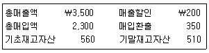
- ￦950
- ￦1,000
- ￦1,150
- ￦1,300
- ￦1,500
(정답률: 43%)
43. 당기순이익에 영향을 미치는 항목이 아닌 것은?
- 감자차익
- 재고자산평가손실
- 유형자산손상차손
- 단기매매금융자산평가손실
- 매도가능금융자산처분이익
(정답률: 27%)
44. 다음 중 금융부채에 속하는 것을 모두 고른 것은?
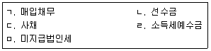
- ㄱ, ㄴ
- ㄱ, ㄷ
- ㄱ, ㄹ, ㅁ
- ㄴ, ㄷ, ㄹ
- ㄴ, ㄷ, ㅁ
(정답률: 37%)
45. 유용한 재무정보의 질적 특성에 관한 설명으로 옳지 않은 것은?
- 명확하고 간결하게 분류되고 특징지어져 표시된 정보는 이해가능성이 높다.
- 어떤 재무정보가 예측가치나 확인가치 또는 이 둘 모두를 갖는다면 그 재무정보는 이용자의 의사결정에 차이가 나게 할 수 있다.
- 검증가능성은 정보가 나타내고자 하는 경제적 현상을 첪실히 표현하는지를 정보이용자가 확인하는데 도움을 주는 근본적 질적 특성이다.
- 적시성은 정보이용자가 의사결정을 내릴 때 사용되어 그 결정에 영향을 줄 수 있도록 제때에 이용가능함을 의미한다.
- 어떤 정보의 누락이나 오기로 인해 정보이용자의 의사결정이 바뀔 수 있다면 그 정보는 중요한 정보이다.
(정답률: 45%)
46. 주당 액면금액이 ￦5,000인 보통주 100주를 주당 ￦8,000에 현금 발행한 경우 재무제표에 미치는 영향으로 옳지 않은 것은?
- 자산 증가
- 자본 증가
- 수익 불변
- 부채 불변
- 이익잉여금 증가
(정답률: 25%)
47. 회계거래의 기록과 관련된 설명으로 옳지 않은 것은?
- 분개란 복식부기의 원리를 이용하여 발생한 거래를 분개장에 기록하는 절차이다.
- 분개장의 거래기록을 총계정원장의 각 계정에 옮겨 적는 것을 전기라고 한다.
- 보조 회계장부로는 분개장과 현금출납장이 있다.
- 시산표의 차변 합계액과 대변 합계액이 일치하는 경우에도 계정기록의 오류가 존재할 수 있다.
- 시산표는 총계정원장의 차변과 대변의 합계액 또는 잔액을 집계한 것이다.
(정답률: 43%)
48. 20×1년도 자본과 관련된 자료가 다음과 같을 때 주당이익은? (단, 우선주는 누적적우선주이다.)
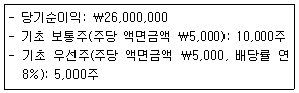
- ￦1,500
- ￦2,000
- ￦2,400
- ￦2,500
- ￦3,000
(정답률: 31%)
49. (주)한국은 20×1년 초에 설비(내용연수 4년, 잔존가치 ￦200)를 ￦2,000에 취득하여, 정액법으로 감가상각하고 있다. 20×1년 말에 동 설비를 ￦1,400에 처분하였다면 인식할 처분손익은?
- ￦150 손실
- ￦200 이익
- ￦450 손실
- ￦600 손실
- ￦650 이익
(정답률: 43%)
50. 재무제표 표시에 관한 설명으로 옳지 않은 것은?
- 재고자산의 판매 또는 매출채권의 회수시점이 보고기간 후 12개월을 초과한다면 유동자산으로 분류하지 못한다.
- 재무상태표의 자산과 부채는 유동과 비유동으로 구분하여 표시하거나 유동성 순서에 따라 표시할 수 있다.
- 수익과 비용의 어느 항목도 당기손익과 기타포괄손익을 표시하는 보고서에 특별손익항목으로 표시할 수 없다.
- 당기손익의 계산에 포함된 비용항목에 대해 성격별 또는 기능별 분류방법 중에서 신뢰성 있고 더욱 목적적합한 정보를 제공할 수 있는 방법을 적용하여 표시한다.
- 포괄손익계산서는 단일 포괄손익계산서로 작성되거나 두 개의 보고서(당기손익 부분을 표시하는 별개의 손익계산서와 포괄손익을 표시하는 보고서)로 작성될 수 있다.
(정답률: 27%)
51. 20×1년 말 화재로 인해 창고에 보관 중인 상품이 모두 소실되었다. 상품과 관련된 자료는 다음과 같다. 화재로 인해 소실된 상품의 추정금액은?
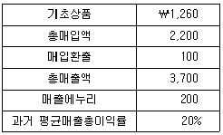
- ￦520
- ￦560
- ￦640
- ￦660
- ￦860
(정답률: 40%)
52. (주)한국의 20×1년 말 결산수정사항 반영 전 당기순이익은 ￦1,070,000이었다. 다음 결산수정사항을 반영한 후의 당기순이익은? (단, 이자와 보험료는 월할 계산한다.)
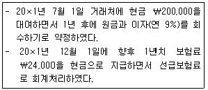
- ￦1,⑤5,000
- ￦1,061,500
- ￦1,077,000
- ￦1,078,500
- ￦1,081,000
(정답률: 32%)
53. 투자부동산에 관한 설명으로 옳지 않은 것은?
- 투자부동산은 임대수익이나 시세차익을 얻기 위하여 보유하는 부동산을 말한다.
- 본사 사옥으로 사용하고 있는 건물은 투자부동산이 아니다.
- 최초 인식 후 예외적인 경우를 제외하고 원가모형과 공정가치모형 중 하나를 선택하여 모든 투자부동산에 적용한다.
- 원가모형을 적용하는 투자부동산은 손상회계를 적용한다.
- 투자부동산에 대해 공정가치모형을 적용할 경우 공정가치 변동으로 발생하는 손익은 발생한 기간의 기타포괄손익에 반영한다.
(정답률: 22%)
54. (주)한국은 20×1년 초 다음과 같은 조건의 사채를 ￦43,783에 발행하였다. 20×2년 말 이자지급 후, 동 사채 전부를 ￦45,000에 조기상환한 경우 사채상환이익은? (단, 금액은 소수점 첫째자리에서 반올림하며 단수차이가 있으면 가장 근사치를 선택한다.)
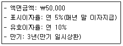
- ￦1,217
- ￦2,727
- ￦4,339
- ￦5,000
- ￦5,227
(정답률: 35%)
55. (주)한국은 20×1년 초에 기계장치(내용연수 5년, 잔존가치 ￦0)를 ￦200,000에 취득하여 정액법으로 감가상각하고 있다. 20×1년 말에 동 기계장치에 손상이 발생하였다. 20×1년 말 기계장치의 순공정가치와 사용가치가 다음과 같을 때 기계장치의 손상차손은? (단, 동 기계장치에 대해 원가모형을 적용하고 있다.)
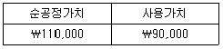
- ￦35,000
- ￦40,000
- ￦50,000
- ￦70,000
- ￦90,000
(정답률: 40%)
56. 재무보고의 개념체계에 관한 설명으로 옳은 것은?
- 일부 부채의 경우는 상당한 정도의 추정을 해야만 측정이 가능할 수 있다.
- 자산 측정기준으로서의 역사적 원가는 현행원가와 비교하여 적시성이 더 높다.
- 보고기업의 경제적 자원과 청구권의 변동은 그 기업의 재무성과에 의해서만 발생한다.
- 일반목적재무보고서는 보고기업의 가치를 직접 보여주기 위해 고안되었다.
- 경영활동의 청산이 임박하거나 중요하게 축소할 의도 또는 필요성이 발생하더라도 재무제표는 계속기업의 가정을 적용하여 작성한다.
(정답률: 27%)
57. 12월 한 달간 상품판매와 관련된 자료가 다음과 같을 때 매출액은? (단, 상품판매 가격은 단위당 ￦100으로 동일하다.)
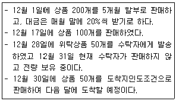
- ￦14,000
- ￦15,000
- ￦19,000
- ￦24,000
- ￦30,000
(정답률: 31%)
58. 20×1년 초에 시작하여 20×2년 말에 완공된 건설계약에 대한 자료가 다음과 같을때, 20×1년도에 인식해야 할 공사이익은? (단, 수익은 진행기준으로 인식하며, 진행률은 발생한 누적계약원가를 추정총계약원가로 나누어 산정한다.)
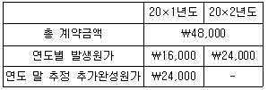
- ￦1,000
- ￦2,800
- ￦3,000
- ￦3,200
- ￦4,000
(정답률: 46%)
59. 현금흐름표 상 영업활동 현금흐름에 관한 설명으로 옳은 것은?
- 영업활동 현금흐름은 직접법 또는 간접법 중 하나의 방법으로 보고할 수 있으나, 한국채택국제회계기준에서는 직접법을 사용할 것을 권장하고 있다.
- 단기매매목적으로 보유하는 유가증권의 판매에 따른 현금은 영업활동으로부터의 현금유입에 포함되지 않는다.
- 일반적으로 법인세로 납부한 현금은 영업활동으로 인한 현금유출에 포함되지 않는다.
- 직접법은 당기순이익의 조정을 통해 영업활동 현금흐름을 계산한다.
- 간접법은 영업을 통해 획득한 현금에서 영업을 위해 지출한 현금을 차감하는 방식으로 영업활동 현금흐름을 계산한다.
(정답률: 45%)
60. 20×1년 12월 30일 현재 (주)한국의 유동자산과 유동부채의 잔액이 각각 ￦1,000이었다. 12월 31일 상품 ￦500을 구입하면서 현금 ￦100을 지급하고 나머지는 3개월 후에 지급하기로 한 경우, 동 거래를 반영한 후의 유동비율은? (단, 상품 기록은 계속기록법을 적용한다.)
- 70%
- 80%
- 100%
- 140%
- 150%
(정답률: 28%)
61. 다음의 20×1년도 자료를 이용하여 계산된 20×1년도 당기순이익은? (단, 매출은 전액 신용매출이다.)
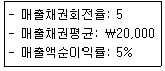
- ￦1,000
- ￦2,000
- ￦3,000
- ￦4,000
- ￦5,000
(정답률: 45%)
62. (주)한국의 자기주식(주당 액면금액 ￦5,000)과 관련된 자료는 다음과 같다. 8월 7일 자기주식처분이 당기순이익에 미치는 영향으로 옳은 것은?
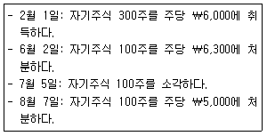
- 영향 없음
- ￦30,000 감소
- ￦30,000 증가
- ￦70,000 감소
- ￦100,000 감소
(정답률: 30%)
63. 무형자산 회계처리에 관한 설명으로 옳지 않은 것은?
- 내용연수가 비한정인 무형자산은 상각하지 아니한다.
- 제조과정에서 사용된 무형자산의 상각액은 재고자산의 장부금액에 포함한다.
- 내용연수가 유한한 경우 상각은 자산을 사용할 수 있는 때부터 시작한다.
- 내용연수가 유한한 무형자산의 상각기간과 상각방법은 적어도 매 회계연도 말에 검토한다.
- 내용연수가 비한정인 무형자산의 내용연수를 유한 내용연수로 변경하는 것은 회계정책의 변경에 해당한다.
(정답률: 43%)
64. 20×1년 초에 설립된 (주)한국의 재고자산은 상품으로만 구성되어 있다. 20×1년말 상품 관련 자료는 다음과 같고 항목별 저가기준으로 평가하고 있다. 20×1년 매출원가가 ￦250,000일 경우 당기 상품매입액은? (단, 재고자산평가손실은 매출 원가에 포함되며 재고자산감모손실은 없다.)
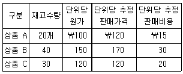
- ￦251,000
- ￦260,600
- ￦260,700
- ￦261,200
- ￦262,600
(정답률: 32%)
65. 20×1년 5월에 사업을 개시한 (주)한국은 20×1년도에 제품을 ￦60,000에 판매하였으며, 제품의 보증기간은 1년이다. 제품보증비용은 판매액의 5%가 발생할 것으로 예상되며, 이는 첪당부채인식요건을 첪족한다. 동 판매와 관련하여 20×1년도에 실제 발생한 제품보증금액이 ￦2,000일 경우 옳은 것은? (단, 첪당부채설정법을 적용한다.)
- 20×1년도 매출액은 ￦57,000이다.
- 20×1년 말 이연제품보증수익은 ￦3,000이다.
- 20×1년도 제품보증비용은 ￦1,000이다.
- 20×1년 말 제품보증첪당부채는 ￦1,000이다.
- 제품보증비용 ￦2,000이 실제 발생한 경우 관련 매출을 감소시킨다.
(정답률: 29%)
66. 다음은 (주)한국의 재고자산 자료이다. 총평균법을 적용하여 계산된 매출원가가 ￦24,000일 경우 7월 15일 매입분에 대한 단위당 매입원가는? (단, 재고자산감모 손실과 재고자산평가손실은 없다.)
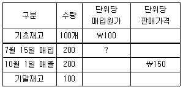
- ￦100
- ￦110
- ￦120
- ￦130
- ￦140
(정답률: 36%)
67. (주)한국은 본사 사옥을 신축하기 위해 창고가 세워져있는 토지를 ￦2,500,000에 구입하여, 즉시 창고를 철거하고 본사 사옥을 건설하였다. 토지 구입부터 본사 사옥 완성까지 다음과 같은 거래가 있었다. 토지와 건물(본사 사옥)의 취득원가는 각각 얼마인가?
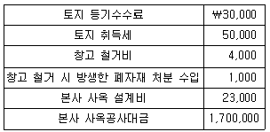
- 토지:￦2,580,000, 건물:￦1,700,000
- 토지:￦2,583,000, 건물:￦1,723,000
- 토지:￦2,583,000, 건물:￦1,780,000
- 토지:￦2,584,000, 건물:￦1,723,000
- 토지:￦2,584,000, 건물:￦1,780,000
(정답률: 49%)
68. 20×1년 말 현재 (주)한국의 장부상 당좌예금 잔액은 ￦11,800이며, 은행측 잔액증명서상 잔액은 ￦12,800이다. 은행계정조정표 작성과 관련된 자료가 다음과 같다면, 은행측 미기입예금은?
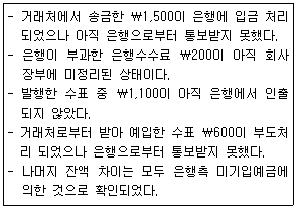
- ￦300
- ￦400
- ￦600
- ￦800
- ￦1,000
(정답률: 29%)
69. (주)한국은 토지(장부금액 ￦10,000, 공정가치 ￦13,000)를 (주)대한의 건물(장부금액 ￦9,500, 공정가치 ￦12,600)과 교환하였다. (주)한국이 동 교환거래에서 인식할 처분이익은? (단, 동 교환거래는 상업적 실질이 있다고 판단되며, 토지의 공정가치가 건물의 공정가치보다 더 명백하다.)
- ￦0
- ￦400
- ￦2,600
- ￦3,000
- ￦3,200
(정답률: 30%)
70. (주)한국은 20×1년 7월 1일 액면금액 ￦100,000의 어음(발행일 20×1년 5월 1일, 만기일 20×1년 10월 31일)을 은행에 연 12%로 할인하였다. 동 어음이 연 9% 이자부어음인 경우 매출채권처분손실은? (단, 어음할인 거래는 금융자산의 제거요건을 첪족하며, 이자는 월할 계산한다.)
- ￦1,180
- ￦1,500
- ￦2,090
- ￦4,180
- ￦4,500
(정답률: 27%)
71. (주)한국은 20×1년 초에 3년 후 만기가 도래하는 사채(액면금액 ￦1,000,000, 표시이자율 연 10%, 유효이자율 연 12%, 이자는 매년 말 후급)를 ￦951,963에 취득하고 만기보유금융자산으로 분류하였다. (주)한국이 20×1년도에 인식할 이자수익은? (단, 금액은 소수점 첫째자리에서 반올림하며 단수차이가 있으면 가장 근사치를 선택한다.)
- ￦100,000
- ￦114,236
- ￦115,944
- ￦117,857
- ￦120,000
(정답률: 48%)
72. (주)한국이 20×1년 중에 취득하여 20×1년 말에 보유하고 있는 금융자산(주식)은 다음과 같다. 동 금융자산의 기말평가가 20×1년 포괄손익계산서상 당기순이익에 미치는 영향은?
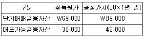
- 영향 없음
- ￦10,000 감소
- ￦10,000 증가
- ￦20,000 감소
- ￦20,000 증가
(정답률: 31%)
73. 활동기준원가계산에 관한 설명으로 옳지 않은 것은?
- 전통적인 원가계산에 비해 배부기준의 수가 많다.
- 활동이 자원을 소비하고 제품이 활동을 소비한다는 개념을 이용한다.
- 제조원가뿐만 아니라 비제조원가도 원가동인에 의해 배부할 수 있다.
- 활동을 분석하고 원가동인을 파악하는데 시간과 비용이 많이 발생한다.
- 직접재료원가 이외의 원가를 고정원가로 처리한다.
(정답률: 28%)
74. (주)한국의 20×1년도 손익분기점 판매량은 4,000개이고 제품 5,000개를 판매하여 영업이익 ￦700,000을 달성하였다. 20×2년도에 제품 단위당 판매가격을 ￦100 인상할 경우 손익분기점 판매량은? (단, 연도별 원가행태는 변동이 없다.)
- 700개
- 1,000개
- 3,500개
- 4,000개
- 4,200개
(정답률: 36%)
75. 표준원가계산제도를 채택하고 있는 (주)한국의 20×1년도 직접재료원가와 관련된 자료가 다음과 같을 때, 직접재료원가의 유리한 수량차이(능률차이)는? (문제 오류로 실제 시험에서는 모두 정답처리 되었습니다. 여기서는 1번을 누르면 정답 처리 됩니다.)
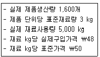
- ￦8,500
- ￦9,000
- ￦9,500
- ￦10,000
- ￦10,500
(정답률: 25%)
76. (주)한국은 종합원가계산제도를 채택하고 있으며, 모든 원가는 공정 전반에 걸쳐균등하게 발생한다. 20×1년도 관련 자료가 다음과 같을 때 선입선출법을 사용하여 계산한 기말재공품 원가는? (단, 공손 및 감손은 없다.)
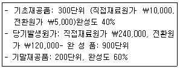
- ￦37,500
- ￦40,000
- ￦48,000
- ￦75,000
- ￦80,000
(정답률: 29%)
77. 정상개별원가계산제도를 채택하고 있는 (주)한국의 20×1년도 원가자료는 다음과 같다. (주)한국이 직접노무원가 기준으로 제조간접원가를 예정배부하고 배부차이는 매출원가에서 전액 조정할 경우 20×1년도 제조간접원가 배부차이는? (단, 매년 제조간접원가 예정배부율은 동일하다.)
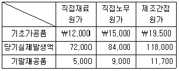
- ￦7,800 과대
- ￦8,800 과소
- ￦9,200 과대
- ￦9,500 과소
- ￦9,800 과대
(정답률: 25%)
78. 20×1년 초에 설립된 (주)한국의 20×1년도 영업활동에 관한 자료는 다음과 같다. 20×1년도에 제품을 8,000단위 생산하여 6,500단위 판매하였을 경우, 전부원가계산 에 의한 영업이익과 변동원가계산에 의한 영업이익의 차이는? (단, 기말재공품은 없다.)
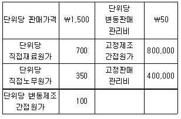
- ￦100,000
- ￦120,000
- ￦150,000
- ￦180,000
- ￦200,000
(정답률: 28%)
79. (주)한국은 보조부문 A와 B 그리고 제조부문 C와 D를 두고 있다. 보조부문 A와 B의 원가는 각각 ￦400,000과 ￦480,000이며, 각 부문의 용역수수관계는 다음과 같다. (주)한국이 단계배부법을 이용하여 보조부문원가를 제조부문에 배부할 경우 제조부문 D가 배부받을 보조부문원가합계는? (단, 배부순서는 A부문원가를 먼저 배부한다.)
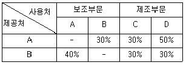
- ￦320,000
- ￦344,000
- ￦368,000
- ￦480,000
- ￦490,000
(정답률: 22%)
80. (주)한국은 단위당 판매가격이 ￦1,000인 제품 A를 생산ㆍ판매하고 있으며 제품 A의 단위당 제조원가는 다음과 같다. (주)한국은 제품 A 1,000개를 개당 ￦800에 구입하겠다는 특별주문을 받았다. 동주문에 대해서는 개당 ￦80의 특수포장원가가 추가로 발생하고, 동 주문에 대한 생산은 유휴설비로 처리될 수 있다. (주)한국이 특별주문을 수락하여 생산ㆍ판매할 경우 이익 증가액은? (단, 특별주문은 기존 제품판매에 영향을 미치지 않고, 기초 및 기말재고는 없다.)
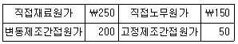
- ￦70,000
- ￦120,000
- ￦220,000
- ￦270,000
- ￦320,000
(정답률: 21%)
3과목: 공동주택시설개론
81. 건축물의 기초에 관한 설명으로 옳지 않은 것은?
- 기초는 기초판, 지정 등으로 구성되어 있다.
- 기초판은 기둥 또는 벽체에 작용하는 하중을 지중에 전달하기 위하여 기초가 펼쳐진 부분을 말한다.
- 지정은 기초를 보강하거나 지반의 내력을 보강하기 위한 것이다.
- 말뚝기초는 직접기초의 한 종류이다.
- 말뚝기초에는 지지기능상 지지말뚝과 마찰말뚝으로 분류한다.
(정답률: 45%)
82. 건축물의 구조설계에 적용하는 하중에 관한 설명으로 옳지 않은 것은?
- 적설하중은 구조물에 쌓이는 눈의 무게에 의해서 발생하는 하중이다.
- 적재하중은 활하중이라고도 하며, 건축물을 점유ㆍ사용함으로써 발생하는 하중이다.
- 공동주택에서 발코니의 기본 등분포 활하중은 주거용 구조물 거실의 활하중보다 작은값을 사용한다.
- 풍하중은 골조 설계용과 외장재 설계용 등으로 구분한다.
- 고정하중은 설계에 적용하는 하중으로 장기하중이다.
(정답률: 54%)
83. 부동(부등)침하에 의한 건축물의 피해현상이 아닌 것은?
- 구조체의 균열
- 구조체의 기울어짐
- 구조체의 건조 수축
- 구조체의 누수
- 마감재의 변형
(정답률: 54%)
84. 철근콘크리트 공사의 거푸집에 관한 설명으로 옳지 않은 것은?
- 부어넣은 콘크리트가 소정의 형상ㆍ치수를 유지하기 위한 가설구조물이다.
- 거푸집 설계시 적용하는 하중에는 콘크리트 중량, 작업하중, 측압 등이 있다.
- 거푸집널을 일정한 간격으로 유지하는 동시에 콘크리트 측압을 지지하기 위하여 긴결재(폼타이)를 사용한다.
- 콘크리트의 측압은 슬럼프값이 클수록 작다.
- 거푸집널과 철근 등의 간격을 유지하기 위하여 간격재(스페이서)를 사용한다.
(정답률: 44%)
85. 철근콘크리트 구조물의 내구성을 저하시키는 주요 원인을 모두 고른 것은?
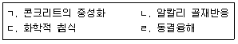
- ㄱ, ㄴ
- ㄷ, ㄹ
- ㄱ, ㄴ, ㄷ
- ㄴ, ㄷ, ㄹ
- ㄱ, ㄴ, ㄷ, ㄹ
(정답률: 42%)
86. 콘크리트의 시공성에 영향을 주는 요인에 관한 설명으로 옳은 것은? (문제 오류로 실제 시험에서는 2, 3번이 정답처리 되었습니다. 여기서는 2번을 누르면 정답 처리 됩니다.)
- 쇄석 사용시 시공연도가 좋아진다.
- 온도가 높을수록 슬럼프값이 감소한다.
- 시멘트의 분말도가 낮으면 시공연도가 나빠진다.
- 시공연도는 일반적으로 빈배합이 부배합보다 좋다.
- 단위수량이 크면 슬럼프값이 감소하고 반죽질기가 증가한다.
(정답률: 44%)
87. 철골구조의 일반적인 접합에 관한 설명으로 옳지 않은 것은?
- 큰보와 작은보의 접합은 단순지지의 경우가 많으므로 클립앵글 등을 사용하여 웨브(web)만을 상호접합한다.
- 철골부재의 접합방법에는 볼트접합, 고력볼트접합, 용접접합 등이 있다.
- 접합부는 부재에 발생하는 응력이 완전히 전달되도록 하고 이음은 가능한 응력이 작게 되도록 한다.
- 용접접합과 볼트접합을 병용할 경우에는 볼트를 조인 후 용접을 실시한다.
- 볼트조임 후 검사방법에는 토크관리법, 너트회전법, 조합법 등이 있다.
(정답률: 47%)
88. 철골공사의 용접부 비파괴검사 방법인 초음파탐상법의 특징으로 옳지 않은 것은?
- 복잡한 형상의 검사가 어렵다.
- 장치가 가볍고 기동성이 좋다.
- T형 이음의 검사가 가능하다.
- 소모품이 적게 든다.
- 주로 표면결함 검출을 위해 사용한다.
(정답률: 46%)
89. 건축공사표준시방서상 조적공사에 관한 설명으로 옳지 않은 것은?
- 콘크리트(시멘트)벽돌 쌓기시 하루의 쌓기높이는 1.2 m를 표준으로 하고, 최대 1.5 m이하로 한다.
- 인방보는 양 끝을 벽체에 200 mm 이상 걸치고 또한 위에서 오는 하중을 전달할 충분한 길이로 한다.
- 콘크리트 블록제품의 길이, 두께 및 높이의 치수 허용치는 ±2 mm이다.
- 콘크리트 블록을 쌓을 때, 살두께가 큰 편이 위로 가게 쌓는다.
- 콘크리트 블록을 쌓을 때, 하루의 쌓기 높이는 1.8 m 이내를 표준으로 한다.
(정답률: 50%)
90. 벽돌구조에 관한 설명으로 옳지 않은 것은?
- 벽돌구조(내력벽)는 풍압력, 지진력 등의 횡력에 약하여 고층건물에 적합하지 않다.
- 콘크리트(시멘트)벽돌 쌓기시 조적체는 원칙적으로 젖어서는 안 된다.
- 벽돌벽이 블록벽과 서로 직각으로 만날 때는 연결철물을 5단마다 보강하여 쌓는다.
- 벽돌벽이 콘크리트 기둥과 만날 때는 그 사이에 모르타르를 첪전한다.
- 치장줄눈을 바를 경우에는 줄눈 모르타르가 굳기 전에 줄눈파기를 한다.
(정답률: 47%)
91. 홈통공사에 관한 설명으로 옳지 않은 것은?
- 처마홈통의 물매는 1/400 이상으로 한다.
- 처마홈통은 안홈통과 밖홈통이 있다.
- 깔때기 홈통은 처마홈통에서 선홈통까지 연결한 것이다.
- 장식홈통은 선홈통 상부에 설치되어 유수방향을 돌리며, 장식적인 역할을 한다.
- 선홈통 하부는 건물의 외부방향으로 물이 배출되도록 바깥으로 꺾어 마감하는 것이 통상적이다.
(정답률: 56%)
92. 미장공사에서 바름면의 박락(剝落) 및 균열원인이 아닌 것은?
- 구조체의 수축 및 변형
- 재료의 불량 및 수축
- 바름 모르타르에 감수제의 혼입 사용
- 바탕면 처리불량
- 바름두께 초과 및 미달
(정답률: 54%)
93. 타일공사에서 일반적인 벽타일 붙임공법이 아닌 것은?
- 떠붙임공법
- 온통사춤공법
- 압착공법
- 접착붙임공법
- 동시줄눈붙임공법
(정답률: 49%)
94. 창호공사에 관한 설명으로 옳은 것을 모두 고른 것은?
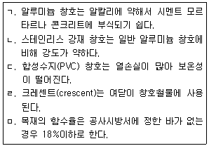
- ㄱ, ㄴ
- ㄱ, ㅁ
- ㄴ, ㄷ, ㄹ
- ㄷ, ㄹ, ㅁ
- ㄴ, ㄷ, ㄹ, ㅁ
(정답률: 43%)
95. 유리공사에 관한 설명으로 옳은 것은?
- 알루미늄 간봉은 단열에 우수하다.
- 로이유리는 열적외선을 반사하는 은(silver) 소재로 코팅하여 가시광선 투과율을 낮춘 유리이다.
- 동일한 두께일 때, 강화유리 강도는 판유리의 10배 이상이다.
- 강화유리는 일반적으로 현장에서 절단이 가능하다.
- 세팅블록은 새시 하단부에 유리끼움용 부재로써 유리의 자중을 지지하는 고임재이다.
(정답률: 39%)
96. 건축물의 방수공법에 관한 설명으로 옳지 않은 것은?
- 시멘트 모르타르 방수는 가격이 저렴하고 습윤바탕에 시공이 가능하다.
- 아스팔트 방수는 여러 층의 방수재를 적층시공하여 하자를 감소시킬 수 있다.
- 시트방수는 바탕의 균열에 대한 저항성이 약하다.
- 도막방수는 복잡한 형상에서 시공이 용이하다.
- 복합방수는 시트재와 도막재를 복합적으로 사용하여 단일방수재의 단점을 보완한 공법이다.
(정답률: 47%)
97. 건축공사표준시방서상 도막방수공사에 관한 설명으로 옳은 것은?
- 고무아스팔트계 도막방수재의 벽체에 대한 스프레이 시공은 위에서부터 아래의 순서로 실시한다.
- 바닥평면 부위를 도포한 다음 치켜올림 부위의 순서로 도포한다.
- 방수재의 겹쳐바르기는 원칙적으로 각 공정의 겹쳐바르기 위치와 동일한 위치에서 한다.
- 겹쳐바르기 또는 이어바르기 폭은 50 mm로 한다.
- 방수재는 핀홀이 생기지 않도록 솔, 고무주걱 또는 뿜칠기구를 사용하여 균일하게 도포한다.
(정답률: 35%)
98. 유성바니시(유성니스)에 페인트용 안료를 섞은 것으로 일반 유성페인트보다 도막이 두껍고 광택이 좋은 도료는?
- 수성페인트(water paint)
- 멜라민 수지 도료(melamine resin paint)
- 래커(lacquer)
- 에나멜페인트(enamel paint)
- 에멀션페인트(emulsion paint)
(정답률: 45%)
99. 다음 조건에서 벽면적 150 m2에 소요되는 콘크리트(시멘트)벽돌의 정미량(매)은? (단, 재료의 할증은 없으며, 소수점 첫째자리에서 반올림한다.)
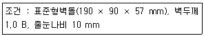
- 11,250매
- 11,813매
- 22,350매
- 23,468매
- 33,600매
(정답률: 47%)
100. 지붕공사에 관한 설명으로 옳지 않은 것은?
- 기와에는 한식기와, 일식기와, 금속기와 등이 있다.
- 아스팔트 싱글은 다른 지붕잇기 재료와 비교하여 유연성이 있으며 복잡한 형상에서도 적용할 수 있다.
- 금속기와는 점토기와보다 가벼워 운반에 따른 물류비를 절감할 수 있다.
- 금속기와 잇기는 평판잇기, 절판잇기 등이 있다.
- 박공지붕은 지붕마루에서 네 방향으로 경사진 지붕이다.
(정답률: 38%)
101. 급수설비에 관한 내용으로 옳은 것은?
- 주택용 급수배관 내 유속은 4 m/s 이상으로 하는 것이 바람직하다.
- 지하층 저수조에서 옥상층 고가수조로 양수할 때 펌프의 실양정(m)은 0이 된다.
- 배관계 구성이 동일할 경우, 배관 내 물의 온도가 높을수록 캐비테이션의 발생 가능성이 커진다.
- 고가수조방식은 압력수조방식에 비해 수압변동이 심하다.
- 수도직결방식은 해당 주택이 정전되었을 때 물 공급이 불가능하다.
(정답률: 36%)
102. 소방시설의 분류와 설비의 연결이 옳지 않은 것은?
- 소화활동설비 - 제연설비
- 소화설비 - 스프링클러설비
- 피난설비- 무선통신보조설비
- 경보설비 - 자동화재탐지설비
- 소화용수설비 - 소화수조
(정답률: 45%)
103. 신에너지 및 재생에너지 개발ㆍ이용ㆍ보급 촉진법상 재생에너지에 해당하지 않는 것은?
- 풍력
- 수소에너지
- 지열에너지
- 해양에너지
- 태양에너지
(정답률: 39%)
104. 다음 중 통기관경 결정의 기본 원칙에 따라 산정된 통기관경으로 옳지 않은 것은?
- 100 mm 관경의 배수수직관에 접속하는 신정통기관의 관경을 100 mm로 한다.
- 50 mm 관경의 배수수평지관과 100 mm 관경의 통기수직관에 접속하는 루프통기관의 관경을 50 mm로 한다.
- 75 mm 관경의 배수수평지관에 접속하는 도피통기관의 관경을 50 mm로 한다.
- 50 mm 관경의 기구배수관에 접속하는 각개통기관의 관경을 32 mm로 한다.
- 100 mm 통기수직관과 150 mm 배수수직관에 접속하는 결합통기관의 관경을 75 mm로 한다.
(정답률: 38%)
1⑤. 다음의 용어에 관한 설명으로 옳은 것은?
- 열용량은 어떤 물질 1 kg을 1℃ 올리기 위하여 필요한 열량을 의미하며 단위는 kJ/kgㆍK이다.
- ppm은 농도를 나타내는 단위로 1 ppm은1 g/L와 같다.
- 엔탈피는 어떤 물질이 가지고 있는 열량을 나타내는 것으로, 현열량과 잠열량의 합이다.
- 노점온도는 어떤 공기의 상대습도가 100 %가 되는 온도로, 공기의 절대습도가 낮을수록 노점온도는 높아진다.
- 크로스커넥션(cross connection)은 급수, 급탕배관을 함께 묶어 필요에 따라 급수와 급탕을 동시에 공급할 목적으로 하는 배관이다.
(정답률: 38%)
106. 급탕설비인 저탕탱크에서 온수온도를 적절히 유지하기 위하여 사용하는 것은?
- 버킷 트랩(bucket trap)
- 서모스탯(thermostat)
- 볼 조인트(ball joint)
- 스위블 조인트(swivel joint)
- 플로트 트랩(float trap)
(정답률: 45%)
107. 배관설비 계통에 설치하는 부속이 아닌 것은?
- 흡입 베인(suction vane)
- 스트레이너(strainer)
- 리듀서(reducer)
- 벨로즈(bellows) 이음
- 캡(cap)
(정답률: 39%)
108. ＜보기＞에서 오수의 수질을 나타내는 지표를 모두 고른 것은?
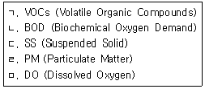
- ㄱ, ㄴ
- ㄴ, ㄷ
- ㄱ, ㄷ, ㄹ
- ㄴ, ㄷ, ㄹ
- ㄴ, ㄷ, ㅁ
(정답률: 42%)
109. 전기설비의 전압 구분에서 교류의 저압기준에 해당하는 것은?
- 600V 이하
- 700V 이하
- 750V 이하
- 800V 이하
- 1,000V 이하
(정답률: 34%)
110. 화재안전기준상 연결송수관설비에 관한 내용으로 옳지 않은 것은?
- 송수구는 지면으로부터 높이가 0.5 m 이상 1 m 이하의 위치에 설치해야 한다.
- 송수구는 화재층으로부터 지면으로 떨어지는 유리창 등이 송수 및 그 밖의 소화작업에 지장을 주지 아니하는 장소에 설치해야 한다.
- 송수구는 구경 65 mm의 쌍구형으로 해야 한다.
- 주배관의 구경은 80 mm로 해야 한다.
- 방수구는 개폐기능을 가진 것으로 설치하여야 하며, 평상시 닫힌 상태를 유지해야 한다.
(정답률: 40%)
111. 지역난방이나 고압증기가 다량으로 필요한 곳에 주로 사용하는 보일러는?
- 전기 보일러
- 노통연관 보일러
- 주철제 보일러
- 수관 보일러
- 입형 보일러
(정답률: 45%)
112. 조명관련 용어 중 광원에서 나온 광속이 작업면에 도달하는 비율을 나타내는 것은?
- 반사율
- 유지율
- 감광보상률
- 보수율
- 조명률
(정답률: 42%)
113. 엘리베이터에 관한 설명으로 옳지 않은 것은?
- 기어레스식 감속기는 교류 엘리베이터에 주로 사용된다.
- 슬로다운(스토핑) 스위치는 해당 엘리베이터가 운행되는 최상층과 최하층에서 카(케이지)를 자동으로 정지시킨다.
- 전자브레이크는 엘리베이터의 전기적 안전장치에 속한다.
- 직류 엘리베이터는 속도제어가 가능하다.
- 도어 인터록(interlock) 장치는 엘리베이터의 기계적 안전장치에 속한다.
(정답률: 34%)
114. 한 시간당 1,000 kg의 온수를 65 °C로 유지하여 공급하고자 할 때 필요한 가열기 최소 용량(kW)은? (단, 물의 비열은 4.2 kJ/kgㆍK, 급수온도는 5 °C, 가열기 효율은 100 %로 한다.)
- 40
- 50
- 60
- 70
- 80
(정답률: 34%)
115. 냉동설비에 관한 내용으로 옳지 않은 것은?
- 일반적으로 압축식 냉동기는 전기, 흡수식 냉동기는 가스 또는 증기와 같은 열을 주에너지원으로 사용한다.
- 히트펌프의 성적계수(COP)는 냉방시보다 난방시가 낮다.
- 흡수식 냉동기의 냉매는 주로 물이 사용된다.
- 증발기에서 냉매는 주변 물질로부터 열을 흡수하여 그 물질을 냉각시킨다.
- 흡수식 냉동기의 주요 구성요소는 증발기, 흡수기, 재생기, 응축기이다.
(정답률: 38%)
116. 대류난방과 비교한 바닥복사난방에 관한 내용으로 옳지 않은 것은?
- 실내 먼지의 유동이 적다.
- 실내 상하부의 온도차가 작다.
- 예열시간이 오래 걸린다.
- 외기온도 변화에 따른 방열량 조절이 쉽다.
- 고장 시 발견과 수리가 어렵다.
(정답률: 44%)
117. 화재안전기준상 옥내소화전설비에 관한 용어의 정의로 옳지 않은 것은?
- 고가수조란 구조물 또는 지형지물 등에 설치하여 자연낙차의 압력으로 급수하는 수조를 말한다.
- 충압펌프란 배관내 압력손실에 따른 주펌프의 빈번한 기동을 방지하기 위하여 충압역할을 하는 펌프를 말한다.
- 기동용 수압개폐장치란 소화설비의 배관내 압력변동을 검지하여 자동적으로 펌프를 기동 및 정지시키는 것으로서 압력챔버 또는 기동용 압력스위치 등을 말한다.
- 체절운전이란 펌프의 성능시험을 목적으로 펌프 토출측의 개폐밸브를 닫은 상태에서 펌프를 운전하는 것을 말한다.
- 진공계란 대기압 이상의 압력과 대기압 이하의 압력을 측정할 수 있는 계측기를 말한다.
(정답률: 32%)
118. 먹는 물 수질기준 및 검사 등에 관한 규칙상 음료수 중 수돗물의 수질기준으로 옳지 않은 것은?
- 경도(硬度)는 1,000 mg/L를 넘지 아니할 것
- 납은 0.01 mg/L를 넘지 아니할 것
- 수은은 0.001 mg/L를 넘지 아니할 것
- 동은 1 mg/L를 넘지 아니할 것
- 아연은 3 mg/L를 넘지 아니할 것
(정답률: 36%)
119. 냉방 시 실온 26 °C를 유지하기 위한 거실 현열부하가 10.1 kW이다. 이때 실내 취출구 공기온도를 16 °C로 설정할 경우 필요한 최소 송풍량(m3/h)은 약 얼마인가? (단, 공기의 밀도는 1.2 kg/m3, 정압비열은 1.01 kJ/kgㆍK로 한다.)
- 1,000
- 2,355
- 3,000
- 4,025
- 4,555
(정답률: 29%)
120. 난방설비에 관한 내용으로 옳지 않은 것은?
- 온수난방은 현열을, 증기난방은 잠열을 이용하는 개념의 난방방식이다.
- 100℃ 이상의 고온수 난방에는 개방식 팽창탱크를 주로 사용한다.
- 응축수만을 보일러로 환수시키기 위하여 증기트랩을 설치한다.
- 수온변화에 따른 온수의 용적 증감에 대응하기 위하여 팽창탱크를 설치한다.
- 개방식 팽창탱크에는 안전관, 오버플로(넘침)관 등을 설치한다.
(정답률: 32%)